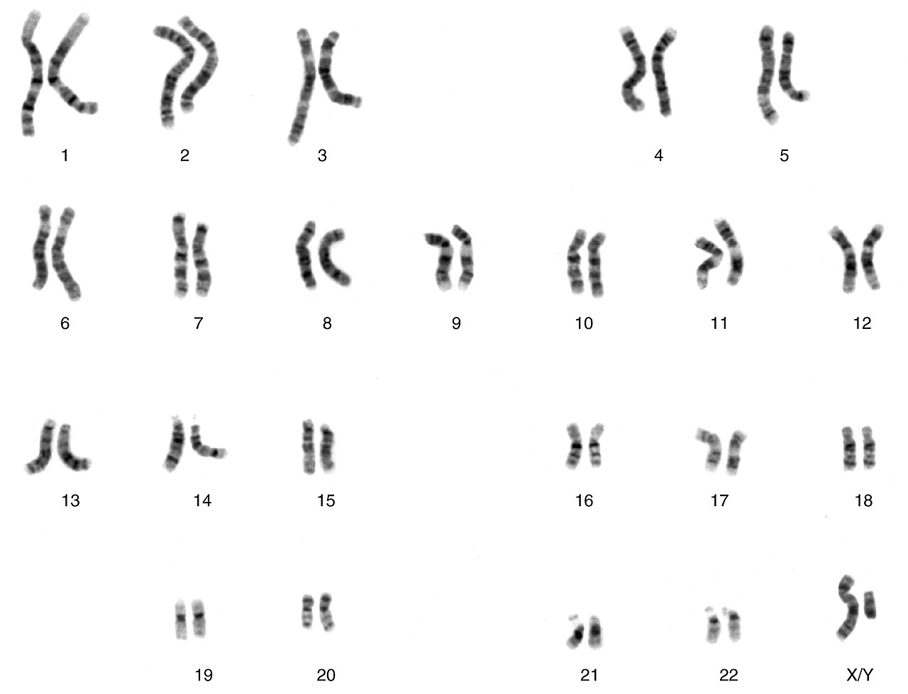
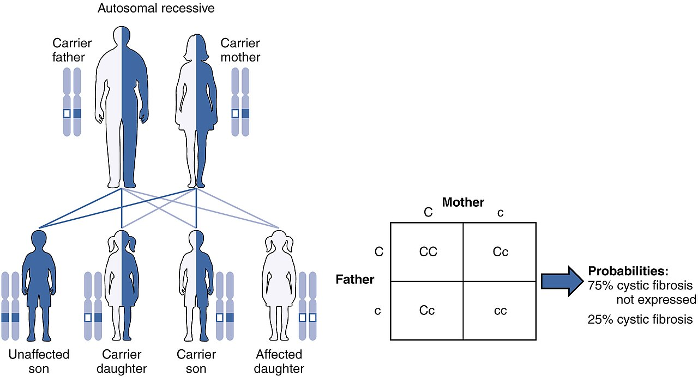
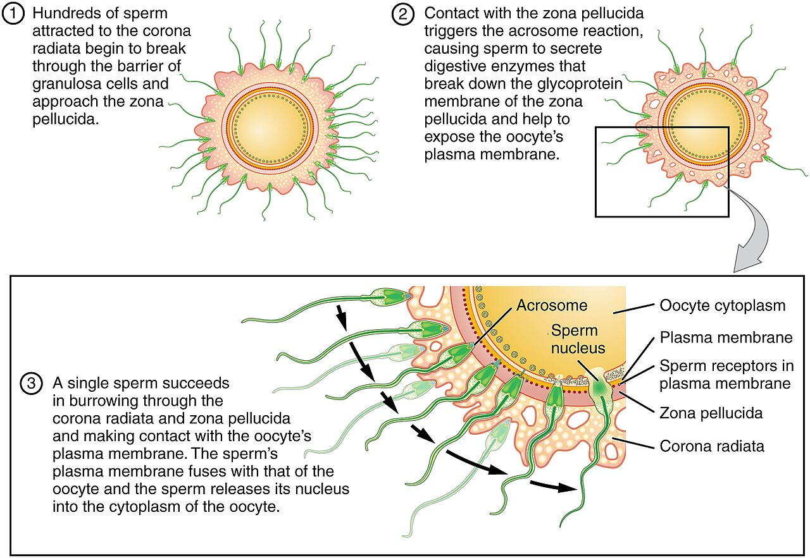
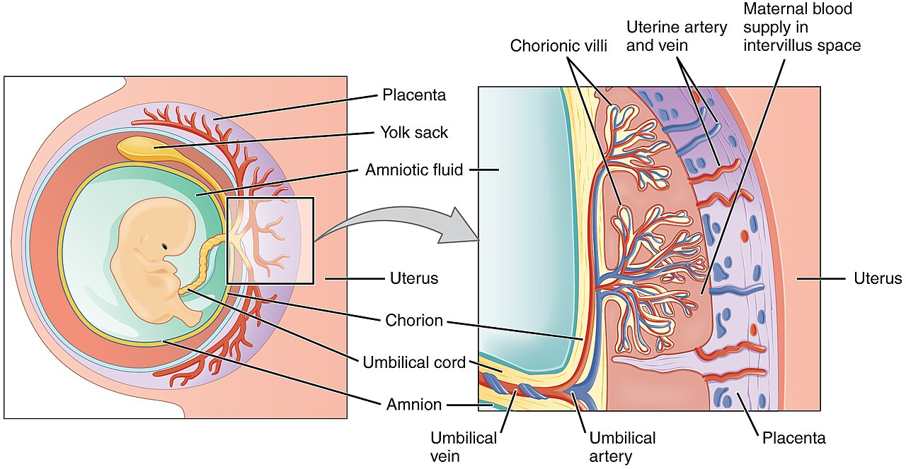
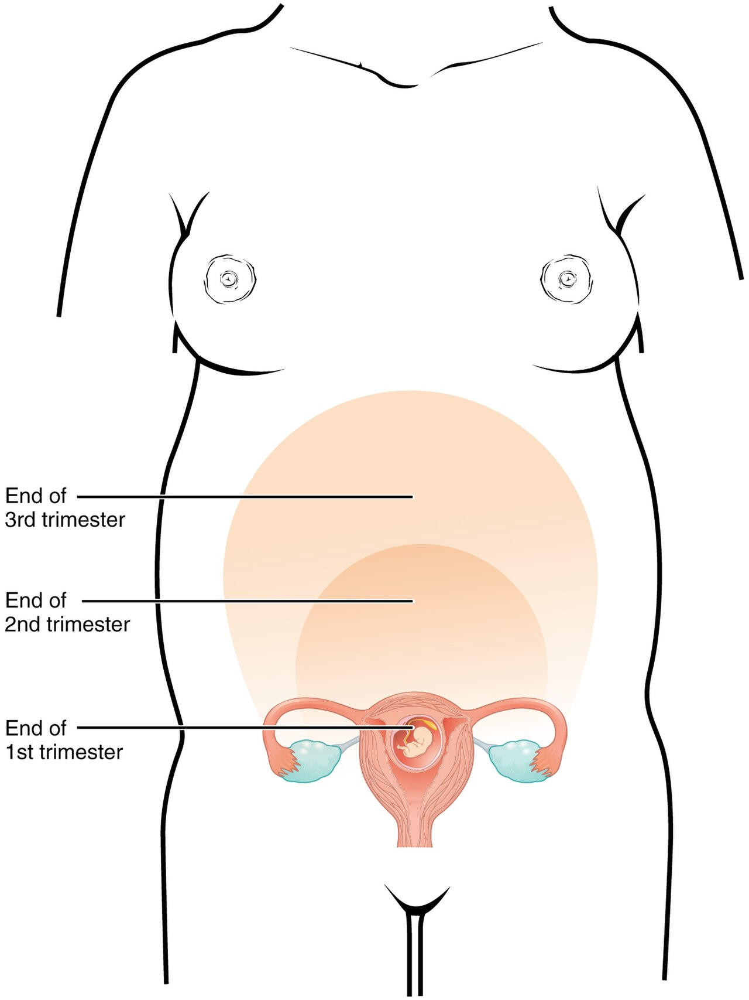

Genetics & Prenatal Development
Every human life begins as a single cell no larger than the period at the end of this sentence — and that cell already carries the entire genetic script for a person. In the space of about thirty-eight weeks, that one cell becomes trillions, arranges itself into a brain, a beating heart, and ten fingers, and emerges as a newborn who will spend the rest of the lifespan unfolding what those first instructions began. This chapter follows that story from the molecule up: how genes are packaged and passed on, what happens when the instructions carry an error, how the stages of prenatal life proceed on their remarkable schedule, which outside agents can derail them, and how thoughtful prenatal care protects the whole enterprise. Nature and nurture are already in conversation before birth — and understanding that conversation is where a real understanding of human development starts.
By the end of this chapter you can
- Describe how DNA, genes, and chromosomes are organized, and state the normal human chromosome number.
- Distinguish genotype from phenotype and explain dominant and recessive inheritance using alleles.
- Compare autosomal dominant, autosomal recessive, and X-linked inheritance patterns with real examples.
- Explain how nondisjunction produces chromosomal disorders such as Down syndrome.
- Order and describe the three prenatal periods — germinal, embryonic, and fetal.
- Define teratogen and explain how dose, timing, and susceptibility shape the harm an agent can do.
- Identify major teratogens — alcohol, tobacco, certain drugs, and infections — and their effects.
- Summarize the components of good prenatal care and why folic acid and early monitoring matter.
Section 1Genes and chromosomes

The molecule that carries the instructions
Inside almost every one of your cells sits a full copy of your genetic instruction book, written in a molecule called DNA (deoxyribonucleic acid). DNA is a long chemical ladder twisted into the famous double helix, and its rungs are made of just four chemical letters — A, T, C, and G — paired in a fixed way (A always with T, C always with G). The order of those letters is a code, and a stretch of that code that spells out one meaningful instruction — usually the recipe for one protein — is a gene. Proteins, in turn, build and run the body: they form tissues, carry oxygen, speed up chemical reactions, and shape traits from eye color to the fine timing of brain development. A gene, then, is not destiny in a single stroke; it is a recipe, and how the recipe is expressed depends partly on the rest of the body and the environment around it.
DNA does not float loose. When a cell is preparing to divide, its DNA coils up tightly around proteins into compact packages called chromosomes. A typical human body cell holds 46 chromosomes, arranged as 23 pairs. Twenty-two of those pairs are autosomes, shared alike by everyone; the twenty-third pair are the sex chromosomes, which are XX in a typical female and XY in a typical male. You inherited one member of every pair from each biological parent — 23 chromosomes carried in the egg, 23 in the sperm — which is why you resemble both, and neither exactly.
From genotype to phenotype
Because chromosomes come in pairs, most genes come in pairs too. The alternative versions of a gene that can sit at the same spot are called alleles. If the two alleles you carry for a trait match, you are homozygous for it; if they differ, you are heterozygous. Your full genetic makeup — the alleles you actually carry — is your genotype. What can be observed about you, the trait that results, is your phenotype. The two are not the same thing, and the gap between them is one of the most important ideas in genetics.
When a heterozygous person's two alleles disagree, which one shows up? A dominant allele produces its effect even when only one copy is present; a recessive allele shows up in the phenotype only when a person carries two copies of it. Someone with one recessive allele and one dominant allele is a carrier — the recessive trait is hidden in their phenotype but can still be passed to a child. Most human traits, though, are not so tidy: height, skin tone, temperament, and intelligence are polygenic, shaped by many genes acting together and by the environment, which is why they vary along a smooth range rather than falling into neat either/or categories.
Why siblings differ
Eggs and sperm are made by a special kind of cell division called meiosis, which halves the chromosome number so that each gamete carries 23 chromosomes rather than 46. Along the way, matching chromosomes swap segments (crossing over) and sort into gametes independently, so each egg and each sperm carries a freshly shuffled combination. That shuffling is why full siblings — drawing from the same two parents — can be so different from one another, and why every person except an identical twin is genetically one of a kind.
| Term | What it means | Everyday handle |
|---|---|---|
| DNA | The coded molecule carrying genetic instructions | The instruction book |
| Gene | A stretch of DNA coding one instruction (often a protein) | A single recipe |
| Chromosome | DNA coiled into a package; humans have 46 (23 pairs) | A chapter of recipes |
| Allele | An alternative version of a gene | A variant of one recipe |
| Genotype | The alleles a person actually carries | What's written |
| Phenotype | The observable trait that results | What shows |
- DNA carries the code; a gene is a stretch of it; DNA is packaged into chromosomes.
- Humans have 46 chromosomes (23 pairs): 22 pairs of autosomes plus one pair of sex chromosomes (XX or XY).
- Alleles can be dominant or recessive; a recessive trait shows only with two copies, so a heterozygous person can be a hidden carrier.
- Genotype (what's inherited) is not the same as phenotype (what's expressed); many traits are polygenic.
Section 2Genetic and chromosomal disorders

Single-gene patterns
When a disorder is caused by a change in a single gene, it tends to follow one of a few predictable inheritance patterns, and knowing the pattern lets us estimate the odds for a family. In autosomal dominant inheritance, one copy of the altered allele is enough to cause the condition, so an affected parent has roughly a one-in-two chance of passing it to each child — Huntington's disease, a progressive neurological disorder that usually appears in midlife, is the classic example. In autosomal recessive inheritance, a child must inherit two altered copies — one from each parent — to be affected; two unaffected carriers have about a one-in-four chance of an affected child with each pregnancy. Cystic fibrosis, sickle-cell disease, Tay-Sachs disease, and phenylketonuria (PKU) all inherit this way.
A third pattern, X-linked recessive, involves a gene on the X chromosome. Because males have only one X, a single altered allele shows up in them with no second copy to mask it, so conditions like hemophilia, red-green color blindness, and Duchenne muscular dystrophy appear far more often in males, while females more often carry the allele without being affected. This is why some traits seem to "skip" from grandfather to grandson through an unaffected mother.
When whole chromosomes go wrong
Other disorders are not about a single gene but about having the wrong number of chromosomes. During meiosis, a pair of chromosomes can fail to separate properly — an error called nondisjunction — leaving a gamete with an extra or a missing chromosome. The best-known result is Down syndrome, or trisomy 21, in which a person carries three copies of chromosome 21 instead of two. Down syndrome is associated with intellectual disability that ranges from mild to moderate, characteristic facial features, and a higher rate of certain heart defects; the chance of it rises with the mother's age, because older eggs are more prone to nondisjunction. Errors in the sex chromosomes produce their own conditions: Turner syndrome (a single X, written 45,X) and Klinefelter syndrome (an extra X in a male, 47,XXY) are examples. Most other whole-chromosome errors are so disruptive that the pregnancy ends in miscarriage.
| Pattern | How it's inherited | Example disorders |
|---|---|---|
| Autosomal dominant | One altered allele is enough; ~50% risk per child of an affected parent | Huntington's disease |
| Autosomal recessive | Two altered alleles needed; two carriers = ~25% risk per pregnancy | Cystic fibrosis, sickle-cell disease, PKU, Tay-Sachs |
| X-linked recessive | Altered gene on the X; affects males far more often | Hemophilia, red-green color blindness, Duchenne muscular dystrophy |
| Chromosomal (trisomy) | An extra whole chromosome from nondisjunction | Down syndrome (trisomy 21) |
| Sex-chromosome | A missing or extra sex chromosome | Turner (45,X), Klinefelter (47,XXY) |
- Autosomal dominant needs one altered allele; autosomal recessive needs two; X-linked recessive conditions strike males more often.
- Two unaffected carriers of a recessive allele have about a 25% chance of an affected child each pregnancy.
- Down syndrome (trisomy 21) comes from nondisjunction and its risk increases with maternal age.
- Sex-chromosome errors include Turner (45,X) and Klinefelter (47,XXY) syndromes.
Section 3Conception and the stages

Conception
Prenatal development begins at conception, when a sperm penetrates an egg and their two sets of 23 chromosomes combine into a single cell with the full complement of 46. That first cell is the zygote, and its genome — already unique, already complete — is the blueprint for the entire person to come. Biological sex is decided in this instant: the egg always contributes an X, so it is the sperm, carrying either an X or a Y, that tips the balance toward XX or XY. Occasionally the zygote splits in the first days into two, producing identical (monozygotic) twins who share a genome; fraternal (dizygotic) twins, by contrast, come from two separate eggs fertilized by two separate sperm and are no more alike than any siblings.
The germinal period
The first two weeks after conception make up the germinal period. The zygote travels down the fallopian tube while dividing again and again — a process called cleavage — until it becomes a hollow ball of cells called a blastocyst. Around the end of the first week it reaches the uterus and burrows into the uterine wall, an event called implantation. This early stage is precarious: a large share of zygotes never implant successfully, often because of chromosomal errors, and are lost before a pregnancy is even recognized. The blastocyst's outer cells will go on to form the placenta, the remarkable organ that will supply the developing child with oxygen and nutrients and carry away wastes.
The embryonic and fetal periods
Once implantation is secure, the embryonic period runs from about the third through the eighth week. This is the season of organogenesis — the laying down of the major organs and body systems. The neural tube, forerunner of the brain and spinal cord, closes in the fourth week; the heart begins to beat; arms, legs, eyes, and ears take shape. Because so much is being built so fast, the embryonic period is also the time of greatest vulnerability to harm, a point Section 4 returns to. From the ninth week until birth comes the long fetal period, dominated by growth and refinement: the organs mature, the brain's neurons multiply and connect, and the fetus begins to move, hear, and respond. Somewhere around 22 to 24 weeks the fetus reaches the age of viability, the point at which survival outside the womb becomes possible with intensive medical support — though every additional week in the uterus improves the odds.
| Period | Timing | What happens |
|---|---|---|
| Germinal | Conception – ~2 weeks | Cleavage, blastocyst forms, implantation; placenta begins |
| Embryonic | ~3 – 8 weeks | Organogenesis — heart, neural tube, limbs, organs form; highest vulnerability |
| Fetal | ~9 weeks – birth | Growth and maturation; movement; viability around 22–24 weeks |
- Development begins at conception, forming a zygote with 46 chromosomes; the sperm decides biological sex.
- The germinal period (0–2 weeks) ends with implantation; the placenta begins forming.
- The embryonic period (3–8 weeks) builds the organs and is the most vulnerable stage.
- The fetal period (9 weeks–birth) is growth and maturation; viability arrives around 22–24 weeks.
Section 4Teratogens

What a teratogen is
A teratogen is any outside agent — a drug, an infection, a chemical, a form of radiation — that can disturb prenatal development and cause a birth defect. The placenta filters and protects, but it is not a perfect barrier, and many harmful substances cross it and reach the developing child. Whether a teratogen actually causes harm, and how much, depends on three principles worth memorizing. First is timing: the critical period for each organ is when it is forming, so the same exposure that is devastating during the embryonic weeks may do little later on. Second is dose: for most teratogens, more exposure means more risk, and some agents are harmful only above a threshold. Third is individual susceptibility: the genetic makeup of both the mother and the fetus influences how a given exposure plays out, which is why two pregnancies exposed to the same agent can end very differently.
The major offenders
The most common preventable teratogen is alcohol. There is no amount established as safe in pregnancy, and prenatal alcohol exposure can produce fetal alcohol spectrum disorders (FASD), a range of lifelong problems that at their most severe include distinctive facial features, growth restriction, and intellectual and behavioral difficulties. Tobacco smoking raises the risk of low birth weight, prematurity, and sudden infant death. Certain medications are notorious: thalidomide, once prescribed for morning sickness, caused severe limb malformations and taught the world a hard lesson about drug testing in pregnancy; isotretinoin (an acne drug) and some anti-seizure medicines carry serious risks, which is why any prescription in pregnancy is weighed carefully. Infections can be teratogenic too — a cluster often remembered as TORCH: toxoplasmosis, rubella (German measles), cytomegalovirus, and herpes, with Zika virus and syphilis now added to the watch-list. Rubella early in pregnancy, for instance, can cause deafness, heart defects, and cataracts, which is why rubella immunity before conception matters so much. Environmental hazards such as lead, mercury, and high-dose radiation round out the list.
| Teratogen | Type | Possible effects |
|---|---|---|
| Alcohol | Drug | Fetal alcohol spectrum disorders (FASD): facial changes, growth & cognitive effects |
| Tobacco | Drug | Low birth weight, prematurity, higher SIDS risk |
| Thalidomide | Medication | Severe limb malformations |
| Rubella | Infection | Deafness, heart defects, cataracts (worst in early pregnancy) |
| Zika virus | Infection | Microcephaly and brain abnormalities |
| Mercury / lead | Environmental | Nervous-system damage, cognitive impairment |
- A teratogen is any agent that can harm prenatal development; the placenta is not a complete shield.
- Harm depends on timing (the organ's critical period), dose, and individual susceptibility.
- Alcohol (FASD) is the leading preventable teratogen; there is no known safe amount.
- Teratogens span drugs, infections (rubella, Zika, the TORCH group), and environmental toxins (lead, mercury).
Section 5Prenatal care

Why early and regular care matters
Most of what threatens a pregnancy is either preventable or far more manageable when it is caught early, and that is the whole point of prenatal care: a schedule of visits, beginning as soon as pregnancy is known, that lets a clinician monitor mother and fetus and intervene before small problems become large ones. Routine visits track the mother's blood pressure and weight, screen for conditions such as gestational diabetes and preeclampsia, follow the growth of the fetus, and confirm that development is on track. Regular care is strongly linked to better outcomes — healthier birth weights, fewer complications, and lower infant mortality — and its benefits are greatest for pregnancies that carry extra risk.
Nutrition and lifestyle
Some of the most powerful protections are the simplest. Folic acid, a B vitamin, dramatically lowers the risk of neural tube defects such as spina bifida — but because the neural tube closes in the fourth week, often before a woman even knows she is pregnant, folic acid is recommended before conception and in the earliest weeks. Adequate overall nutrition, sensible weight gain, and enough iron and other nutrients support fetal growth. Just as important is avoiding known harms: no alcohol, no smoking, caution with medications, and steering clear of infections and environmental toxins where possible. In this sense prenatal care is as much about what a mother avoids as about what she does.
Screening and monitoring
Prenatal care also offers a growing toolkit for looking in on the fetus. Ultrasound uses sound waves to image the fetus, confirm dates, check growth, and detect many structural problems without any radiation. Blood tests can screen for chromosomal conditions and neural tube defects. When more information is needed, amniocentesis (sampling the amniotic fluid) and chorionic villus sampling (sampling placental tissue) can diagnose chromosomal disorders directly, though they carry a small risk and so are offered selectively. Paired with genetic counseling, these tools help families understand their situation and prepare — the modern extension of everything this chapter has covered, from the single gene to the whole pregnancy.
| Component | What it does | Why it matters |
|---|---|---|
| Folic acid | B vitamin taken before & early in pregnancy | Prevents most neural tube defects |
| Routine visits | Track blood pressure, weight, fetal growth | Catch preeclampsia, gestational diabetes early |
| Ultrasound | Sound-wave imaging of the fetus | Confirms dates and detects many problems, no radiation |
| Amniocentesis / CVS | Sample amniotic fluid or placental tissue | Diagnoses chromosomal disorders directly |
| Genetic counseling | Explains inherited risks and results | Supports informed, unpressured decisions |
- Early, regular prenatal care monitors mother and fetus and catches problems like preeclampsia and gestational diabetes.
- Folic acid before and early in pregnancy prevents most neural tube defects; the timing is critical.
- Avoiding alcohol, tobacco, and other teratogens is as important as any positive step.
- Ultrasound, blood screening, and (when needed) amniocentesis or CVS, paired with counseling, inform and protect.
The chapter in one breath
- DNA holds the code, a gene is one instruction, and DNA is packaged into 46 chromosomes (23 pairs, XX or XY) — one set from each parent.
- Genotype (what's inherited) differs from phenotype (what's expressed); dominant alleles show with one copy, recessive with two.
- Disorders follow patterns — autosomal dominant, recessive, X-linked — while nondisjunction causes chromosomal conditions like Down syndrome.
- Prenatal life moves through the germinal, embryonic, and fetal periods, with organs built — and most vulnerable — in the embryonic weeks.
- A teratogen's harm depends on timing, dose, and susceptibility; alcohol, tobacco, some drugs, and infections like rubella and Zika are key threats.
- Good prenatal care — folic acid, regular visits, avoiding teratogens, and screening — protects a healthy pregnancy.
- Nature and nurture are already interacting before birth: genes set possibilities, and the prenatal environment helps decide how they unfold.
ReferenceWords worth knowing
A quick reference for the terms in this chapter — skim it now, or circle back whenever a word trips you up.
- Allele
- An alternative version of a gene; a person carries two, one on each chromosome of a pair.
- Amniocentesis
- A prenatal test that samples amniotic fluid to diagnose chromosomal and other disorders.
- Autosome
- Any of the 22 chromosome pairs that are not the sex chromosomes.
- Blastocyst
- The hollow ball of cells the zygote becomes before implanting in the uterine wall.
- Chromosome
- A package of tightly coiled DNA; humans normally have 46, arranged in 23 pairs.
- Critical period
- The window during which a particular organ or system is forming and is most sensitive to harm.
- DNA (deoxyribonucleic acid)
- The double-helix molecule that stores genetic instructions in a four-letter code.
- Dominant allele
- An allele that produces its effect even when only one copy is present.
- Down syndrome
- A chromosomal disorder (trisomy 21) caused by an extra copy of chromosome 21.
- Embryonic period
- Weeks 3–8 of prenatal development, when the major organs form and vulnerability is highest.
- Fetal alcohol spectrum disorders (FASD)
- The range of lifelong effects caused by prenatal alcohol exposure.
- Fetal period
- Week 9 to birth, marked by growth, organ maturation, and increasing movement.
- Gene
- A stretch of DNA that codes one instruction, usually the recipe for a protein.
- Genotype
- The set of alleles a person actually carries.
- Germinal period
- The first two weeks after conception, from zygote through implantation.
- Heterozygous
- Carrying two different alleles for a given gene.
- Homozygous
- Carrying two matching alleles for a given gene.
- Meiosis
- The cell division that makes gametes, halving the chromosome number to 23 and shuffling genes.
- Phenotype
- The observable trait that results from the genotype and its environment.
- Recessive allele
- An allele whose effect appears only when two copies are present.
- Teratogen
- An outside agent — drug, infection, chemical, or radiation — that can harm prenatal development.
- Zygote
- The single cell formed at conception when sperm and egg unite, carrying the full 46 chromosomes.